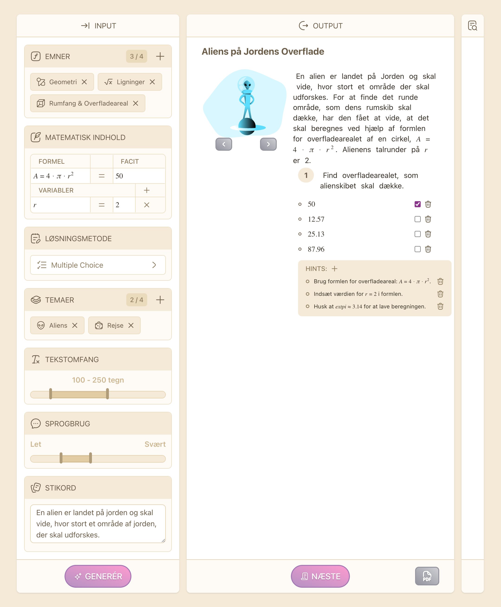
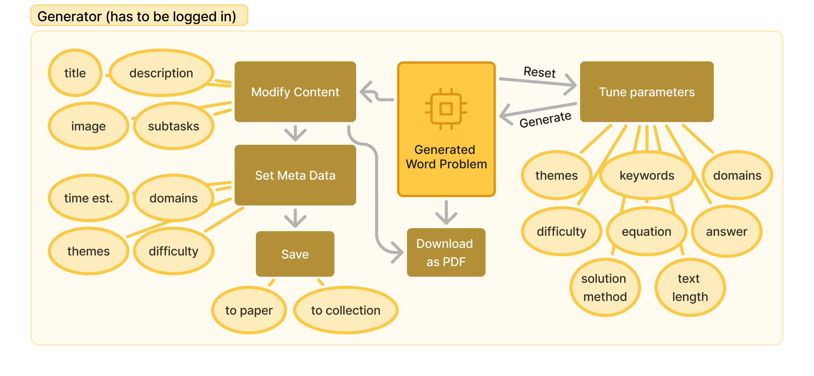
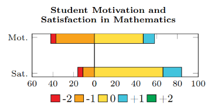
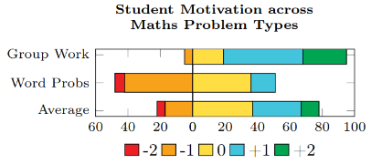
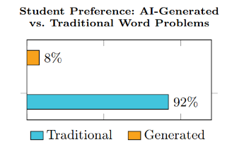
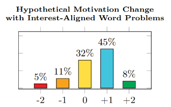

Simplifying Prompt Engineering for Educational Content Generation
Math motivation is declining
Achievement in grades 4 & 8 is falling worldwide, tracking a drop in confidence and perceived value, not just skill.
Our own survey, n = 38, ages 12–13, echoes the trend.
Teachers can't keep up with customisation
- Matematikfessor, Mattip, Gyldendal filter only by grade or domain
- Adjusting terminology, length, or theme means rewriting problems by hand
Every extra requirement — terminology, length, theme, difficulty — collapses the odds of finding a ready-made match.
State of the art
MathGen, AI Math Worksheet Generator, and NoteGPT already generate problems automatically.
subdomain selection
some solution-method options
language-complexity control · in-app editing
searchable metadata · RAG-based refinement
Can a generative tool close this gap for teachers?
The System
Input → Output → Review
The generated problem — with LaTeX notation and a thematic image — is directly editable before publishing.

The Generator Page

Structured I/O keeps the model honest
Semantic Kernel (.NET) calling GPT-4o-mini
OpenAI's response_format enforces a strict JSON schema — title,
narrative, subtasks, LaTeX, metadata.
Multiple choice · Problem solving
Each path has its own curated examples plus a dynamic reminder preamble.
Evaluation
Student Survey


n = 38, ages 12–13 — word problems rated lowest of all ten problem types.
Students preferred the traditional problem


Using no prompt engineering and no picture, to establish a baseline.
Visuals are important
10 students compared 10 problem pairs; 2 teachers were interviewed on design needs.
"I would have picked the generated one — if it had a picture too."
Traditional problems came with diagrams; LLM ones didn't. Teachers asked for filters on theme, domain, difficulty, time, and method.
Teachers engaged nearly twice as long with the prototype
Findings
Structure lowers the barrier...
Parameters let teachers focus on pedagogical intent, not prompt wording.
Automated layout was consistently valued: less post-processing, more classroom-ready output.
...but doesn't remove the teacher
Mathematical reasoning on multi-step problems still needs a human check.
Limitations
- Final usability test: only 3 teachers
- Missing features had to be explained verbally, shaping expectations
Scaffolded prompting, not automated teaching
Distilling prompt engineering into pedagogical parameters and layouts makes LLM-assisted content usable for teachers.
Next: Search / Problem / Paper pages · RAG over top-rated problems · a larger, more diverse teacher evaluation.